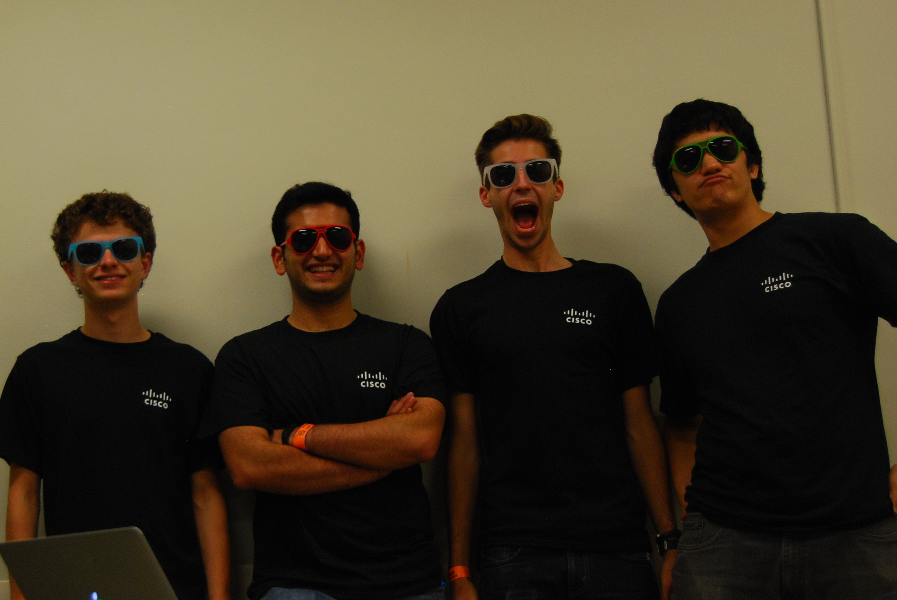

Welcome to our wonderful webpage that isn't from a template at all!
We strapped an Intel Edison running node.js to a Parrot AR Drone 2.0. The Edison is attached to an LED Module we constructed, which gives us the ability to render vibrant colors on an RGB LED as well as power ultra-bright 5mm white LEDs. We used the combination of the Edison, the LEDs, and the AR Drone, in addition to some javascript, to enable us to write things in the air using a camera set for a long exposure. The use of Edison and Node.js allow us to do this from anywhere in the world over the internet.
As a general note to the general public: it really irks people who know things about multicopters when people call them drones. Yes, Parrot does call their consumer quadcopter the "AR Drone," but they also say silly things like claiming to invent "absolute" mode, which has been around for a while on real flight controllers. The AR Drone is a pretty nice piece of consumer hardware, but it lacks a lot of things even a modest-grade hobbiest multicopter would have--brushless motors, for example. The PID tuning is clearly designed for people who don't know how to fly (for example, it
I'll bet this code would do something great:
$ cd your_repo_root/repo_name
$ git fetch origin
$ git checkout gh-pages
Team Selfies
Datasheet is still in the works.
The Intel Edison powering our hack
We took some pretty pictures using an AR Drone.
Mason wonders, "what's this thing?"
This is actually a really pretty picture of the Philadelphia skyline! 
This group picture sponsored by MySQL
It flies. It's 4 AM, I'm done with funny captions.
This group picture sponsored by Juniper Networks 
In other news, the Skyr1t3r is confirmed to be 100% sprinkler-proof.
Authors and Contributors
Contributors to this project: Forrest Bourke (@fbourke:Music, moral support, and fonts), Saarth Mehrotra (@saarthmehrotra:Sass, gas, and swag), Mason del Rosario (@mdelrosa:Socks, shoes, and code), and Evan Dorsky (@enigmoid:Macbooks, iPhones, and VCRs).